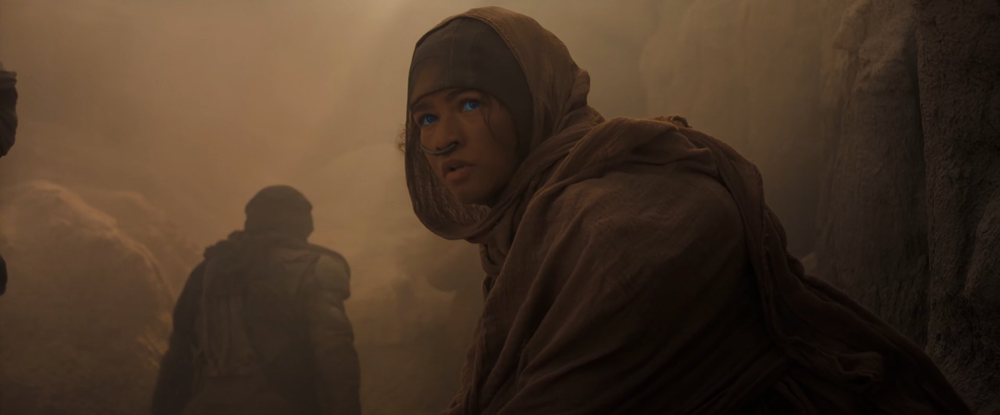
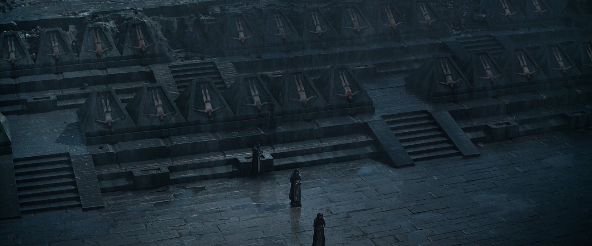
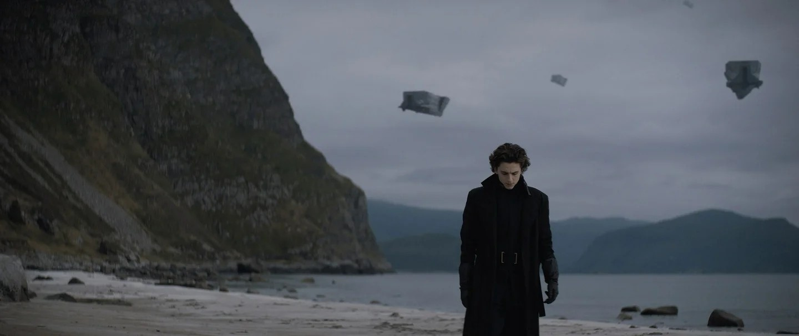

Трудно вспомнить, когда в последний раз кто-нибудь в Голливуде отваживался на такую самоубийственную авантюру, как «Дюна». А она самоубийственная, не сомневайтесь.
Во-первых, бренд не то чтобы узнаваемый. Да, у романа Фрэнка Герберта полно почитателей, но их несравнимо меньше, чем нужно для окупаемости большой картины. Казуальная аудитория (расширим это понятие и на кино) в лучшем случае слышала про не особо удачный фильм Дэвида Линча (ну и ещё наберётся какое-то количество возрастных геймеров, что помнят серию стратегий по мотивам). Почва так себе, согласитесь.
Во-вторых, «Дюна» категорически не годится для превращения в блокбастер. Это масштабная научно-фантастическая сага в очень непривычной около-арабской эстетике со сложной мифологией, терминологией (всякие шай-хулуды с квизац хадерачами), запутанным сюжетом и вместе с тем размеренным, неспешным повествованием. В общем, всё то, чего сегодняшние студийные боссы стараются избегать.
Ну а в-третьих, доверили картину Дени Вильнёву, чей последний фильм, безумно талантливый «Бегущий по лезвию 2049», собрал непростительно мало, несмотря на известный бренд и звёздный актёрский состав. А тут ещё пандемия, переносы, гибридный прокат… Короче, если киноиндустрия всё ещё подчиняется устоявшимся правилам, «Дюна» обречена на кассовый провал.
Хотя… Сумел же «Шан-Чи» превзойти ожидания аналитиков. Может, и лента Вильнёва всё-таки достучится до широкой аудитории и соберёт свою кассу? Ведь это и впрямь выдающееся кино.
Посмотреть трейлер можно тут ТЫК
Сто второй век нашей эры. Человечество успешно освоило космос и теперь существует в виде галактического феодального государства. Главный ресурс в этом диковинном мире — так называемая пряность, необходимая для межзвёздных перелётов. Единственное место её добычи — пустынная планета Арракис. Много лет там правили жестокосердные Харконнены, но внезапно волею падишаха-императора наместником назначен благородный герцог Лето из Дома Атрейдесов. Все понимают, что это не проявление монаршей милости, а очередная политическая интрига, попытка стравить самых влиятельных аристократов, однако ослушаться никак нельзя. Собравшись с силами, Атрейдесы отправляются на планету песков, где юного Пола, герцогского сына, ждут великие испытания и великие свершения.
Правда, последних вы не увидите, и к этому нужно быть готовым. Ведь наверняка не все следили за новостями и не все знают, что в два с половиной часа уместилась лишь половина сюжета, так что в конце вас ждёт беззастенчивый клиффхэнгер. Со стороны создателей было бы честнее добавить к названию подзаголовок «Часть 1», но это лишь усугубило бы прокатные перспективы картины. Впрочем, того, что есть, вам хватит за глаза, если, конечно, правильно сформулировать ожидания.

Ни в коем случае не стоит идти на фильм как на новые «Звёздные Войны» или, как пишут некоторые рецензенты, на ««Властелин Колец» нашего времени». «Дюна» — это другое. Картина не пытается вас развлекать, у неё нет такой задачи. Цель создателей — перенести на экран произведение Фрэнка Герберта, оживить его и в полном объёме отдать дань его монументальности. Конечно, будут и бои на мечах, и взрывы, и гигантские черви — но лишь тогда, когда положено по роману, и ни сценой раньше. Вильнёв не Питер Джексон — он не облегчает тон оригинала, не разбавляет повествование сценами-крючками в разных жанрах, как было в трилогии по Толкиену. Наоборот, «Дюна» ощущается предельно цельной, выдержанной, без единого лишнего кадра. Это кино-иллюстрация, выполненная лучшими художниками на планете.
Трейлеры не врали — она действительно настолько красива, что, быть может, в кои-то веки стоит раскошелиться на IMAX. Особенно если раньше жаба душила. Вильнёв просто одержим этим миром и пытается запечатлеть его во всех деталях так, как будто он сам телепортировался туда с камерой наперевес. Общие планы гаргантюанских звездолётов здесь соседствуют с макросъёмкой пустынной мыши, у которой по уху стекает капелька пота. При всей своей фантастичности, даже сюрреалистичности (от влияния Линча так просто не избавишься) мир «Дюны» кажется удивительно правдоподобным. Пожалуй, это самое «тактильное» кино со времён «Дороги ярости»: декорации, костюмы и реквизит изготовлены и сняты так, что ты можешь представить, каковы они на ощупь. Редкий фильм способен так погрузить в себя.

Картинку дополняет саундтрек Ханса Циммера, в котором любимый им индустриальный гул переплетается с пронзительным вокализом. Отдельно слушать это не хочется, но как ещё один элемент иллюстрации ложится идеально. То же можно сказать и про актёров. «Дюна» ещё с ранних анонсов привлекала внимание своим впечатляющим составом: тут и Джейсон Момоа, и Джош Бролин, и Оскар Айзек, и Хавьер Бардем. Ах, да, ещё модный молодняк — любимчик фестивалей Тимоти Шаламе и подруга Человека-паука Зендая. Если на чём и можно сделать ставку в промо-компании, то это на звёздах. Однако тут неподготовленного зрителя могут ждать не самые приятные сюрпризы, ведь перед нами, по сути, самый дорогой фан-каст в истории. То есть под каждого персонажа, вне зависимости от его важности и степени вовлечённости в сюжет, подбирали максимально подходящего актёра без учёта того, насколько он популярен. Джош Бролин бегает на заднем плане, инфернальный и почти неузнаваемый Стеллан Скарсгард появляется всего на пару сцен, а у Дэйва Батисты и Зендаи вовсе почти камео, просто потому что в начале истории их героям особо нечего делать. Первые акты, по канону, почти целиком посвящены Полу Атрейдесу и его матери Джессике.
То, что Шаламе чертовски талантлив, давно не секрет — многие ли в 22 могли похвастать номинацией на «Оскар»? Его Пол — задумчивый, робкий, сомневающийся молодой человек, в котором, однако, чувствуются и доброта, и сила, и отвага. При кажущейся простоте образ совсем не лёгкий в исполнении ни с актёрской точки зрения, ни с режиссёрской. У того же Линча Пол вышел наивным дурачком с горящими глазами, несмотря на то, что сыграл его небесталанный Кайл МакЛоклен. Здесь же работа совершенно иная по глубине и тонкости.
Хотя главное украшение «Дюны» — однозначно Ребекка Фергюсон. Вам больше не потребуется никаких доказательств этого, как только вы увидите сцену с «коробкой боли», засвеченную в трейлере. Леди Джессика не просто «мать главного героя», но сложная героиня, которая несёт на себе печать своего прошлого, принимает многие удары настоящего и строит фундамент для будущего. Звучит пафосно, но такова вся «Дюна».

Это по-настоящему большое, можно сказать величественное, визуально безупречное, блестяще сыгранное полотно, создатели которого всерьёз рассчитывают на внимательность и отдачу зрителя. Вильнёв сделал всё возможное, чтобы разжевать мифологию и, что важнее, идеи Герберта, не скатываясь в тривиальную экспозицию. И ему удалось, но вам нужно слушать каждый диалог, видеть и понимать всё, что происходит на экране, — как показывает практика, это довольно высокий ценз для посетителей мультиплексов.
Трудно представить исход, при котором «Дюна» вдруг станет мейнстримным блокбастером. Только если в параллельной вселенной, где «Бегущий по лезвию 2049» не провалился к чёртовой матери. Слишком уж «Дюна» не похожа на хиты проката, слишком много факторов против. Но даже если чуда не произойдёт, и студия не согласится спустить ещё $200 млн на такую авантюру, фильм Дени Вильнёва останется в памяти многих как знак того, что иногда у нас может быть иное кино.